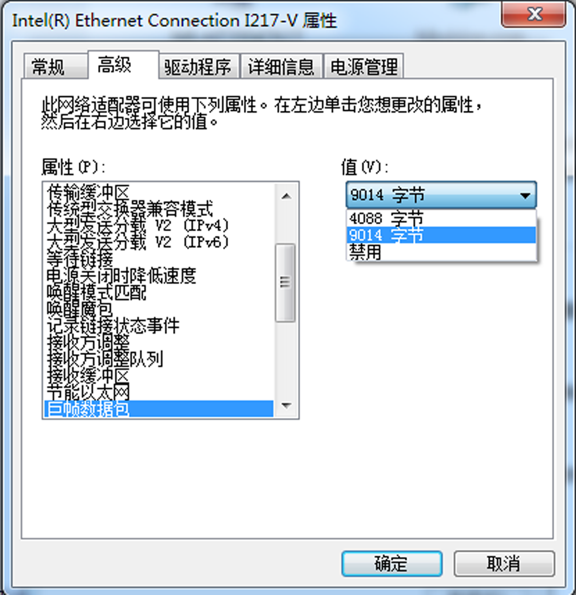

网口相机通过MVS客户端使用前需确保PC和相机的IP地址处于同一个局域网，且PC的网口已开启巨帧。
-
通过系统开始菜单搜索MVS客户端的网卡配置工具NIC_Configurator并打开，工具界面如下图所示。
-
确认巨型包是否已启用。若已启用，则进行下一步；若未启用，需要开启。
说明：
- 客户端安装时，可以设置是否打开所有网卡的巨型包。
- 若通过网卡配置工具设置巨型包失败，可以打开网卡属性，选择高级菜单，确认是否有关于巨帧的参数，如下图所示。若有，则设置为9014字节或9
KB；若不能成功设置，此时可以通过更新网卡驱动或者更换网卡，查看是否含有巨帧这个参数。

图 2 设置巨帧
-
设置PC网口的IP地址。
-
在工具的网卡处选择对应的网卡，点击网卡协议属性处的打开，进入PC的IP配置窗口。
-
在IP配置窗口设置PC的IP地址并点击确定。
说明：
为确保相机的稳定运行，建议将PC网口的IP地址设置为静态IP。
-
通过客户端的设备列表搜索GigE接口相机，选中需要设置的网口相机。
- 若相机为不可达状态，则双击相机后弹出修改IP地址窗口，如下图所示。
- 若相机为可达状态，可直接双击连接相机；也可单击右键选择修改IP弹出修改IP地址窗口，如下图所示。
-
根据修改IP地址窗口提示的有效IP地址进行设置。
说明：
为确保相机的稳定运行，建议网口相机的IP地址设置为静态IP。